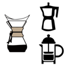
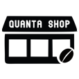

PROCESO QUANTA COFFEE
Nuestra calidad en la produccion, de la plantación de la semilla, a la finalización del producto y cada proceso en medio

CENTRO BARISTA
Las diferentes formas para disfrutar nuestros cafes especiales de origen y cual recomendamos para su preparación

FINCAS QUANTA COFFEE
Una mirada dentro de nuestros vastos campos de cafe y la calidad que brindan los campesinos de nuestras fincas

TIENDA QUANTA COFFEE
Quanta Coffee te ofrece solo la mejor especialidad del cafe de Origen propio de cada tierra del triangulo del Cafe colombiano